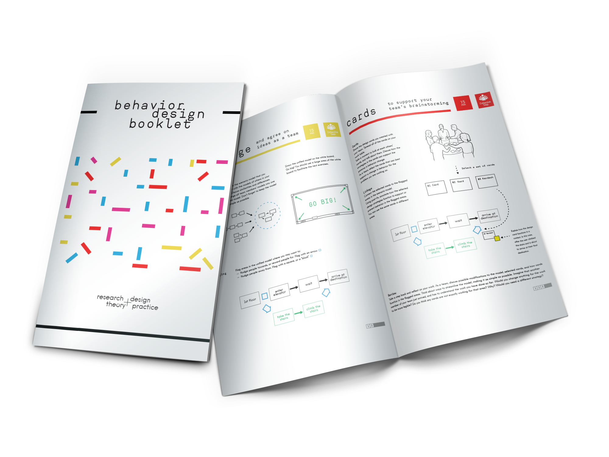
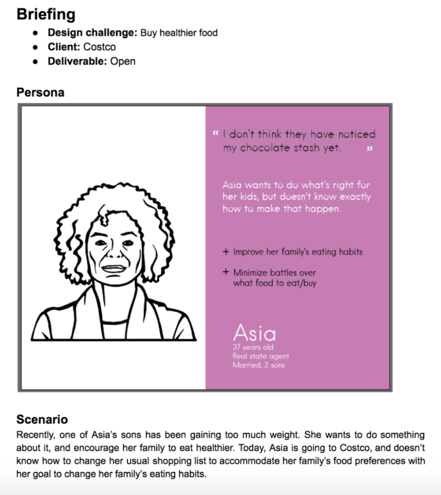
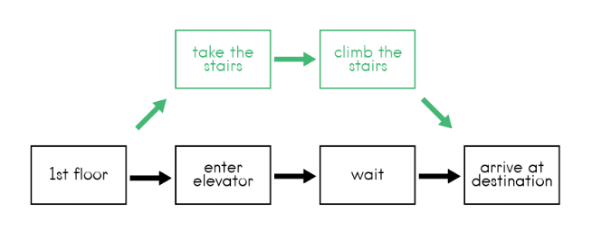

Download the resources you will need to run the Behavior Change Design Sprint:

Behavior Change Design Sprints what?
UX and interaction designers often create products and services to help people give up on bad habits
or to perform positive behaviors such as exercising more or eating healthy.
This process of creating technologies to nudge or change behavior is known as
behavior change design.
I identified downsides with the current processes to design behavior change technologies, such as Fogg's and Wendell's.
I took these downsides and used them as design goals for the creation of a new behavior change esign process:
-
Workflow fit Past behavior change design processes don’t properly adapt to the context of designers.
Processes are either too time-consuming or use terminology that is unusual for designers.
Therefore, to better align to what designers do in practice,
we took the Google Design Sprint process as a foundation for our process.
It is a pretty straightforward step by step, with terminology and exercises that are familiar to designers.
-
Theory-driven insights Past processes are also disconnected from behavior change literature.
They don’t offer clear guidance on how to incorporate behavior change theory into the design process.
I want to facilitate the use and application of behavior change theory -
there’s a wealth of behavior change theories that can be leveraged in this space.
-
Design ethics Past processes don’t have any particular steps or guidance related to design ethics. As we all know, ethics is a particularly challenging aspect of behavior change design. I want to encourage designers to consider ethics as a key factor in the design behavior change technologies.
The Behavior Change Design Sprint - how does it work?
Preparation
Split the participants in groups of 3 or 4.
They should have access to a whiteboard, post its, markers.
The whole sprint happens in less than 90 minutes.
It’s a rapid design workshop, because we wanted it to fit into a realistic time slot
that design teams could use for something like a brainstorming session.
To start with the sprint one needs a challenge as this is a problem-based design process.
Having a clear goal and a design scenario are the most important inputs for the sprint.
We also used personas, which can be substituded by any other in-depth information that you have about your users or audience.
The example below shows a design challenge about
encouraging people to buy healthier food.

Step 1. Map
In the first step, Map, participants are asked to read and become familiar with the input materials.
In our case, we used challenges, personas, and design scenarios. In the user journey exercise,
participants have to create a visual representation of the design scenario,
showing a sequence of events that a persona goes through.
Participants use whiteboards to draw out the user journey, which facilitates group work.
It is also an opportunity
to clearly map out the target behavior found in the challenge.
Participants draw the target behavior with a different color marker
— in this example, taking the stairs instead of taking the elevator.

The user journey exercise helps participants to design interventions with a focus on a particular behavior outcome.
By being able to visualize the design scenario which is usually presented as a text paragraph,
and highlight the target behavior, it allows participants to use the journey as
a framework to drive discussions and decisions.
The user journey also helps participants to identify specific times and location for their design interventions.
They clearly define as a group in what context their interventions would come into play.
One important thing that the user journey exercise has to do.
Participants need to think about the
why of behaviors, identifying obstacles for
target behaviors to happen.
Step 2. Sketch
In the second step we expose participants to behavior change theory in the form of design cards.
However, we believe that other resources could be used, for example Lockton’s cognitive biases cards,
or even insights from user research. What is important here is that cards should have clear
recommendations that can help designers brainstorm ways to address their design challenge.
You can download an
example behavior change design card deck here.
We found that the theory cards were used by participants as talking points and sparked interesting
conversations of how to influence behaviors. This was key because without the cards, brainstorming
often generates more general ideas such as how to make designs easier to use or more delightful.
Then, individually, participants should sketch ideas based on the brainstorming and the behavior change cards.
Step 3. Decide
In the third step, participants should present their ideas and sketches to their peers.
At the end of this step, groups converge on one idea to do the prototyping step. In the guide, we offer some prompts to facilitate decision-making.
Step 4. Prototyping
Finally, participants create low-fidelity prototypes based on their most promising behavior change design idea.
In parallel to prototyping, participants have to annotate their designs,
clearly explaining how the behavior change theories were used to inspire their prototypes,
and discuss the ethics of their designs.
Using behavior change theories facilitates advocating for a design. We found in past sessions that
participants more confidently explained their design rationale by using the cards, incorporating some of the
arguments in their annotations.
If you are interested in using the Behavior change design sprint,
we prepared a packet with example inputs, guide, and design cards.
Download these resources below: